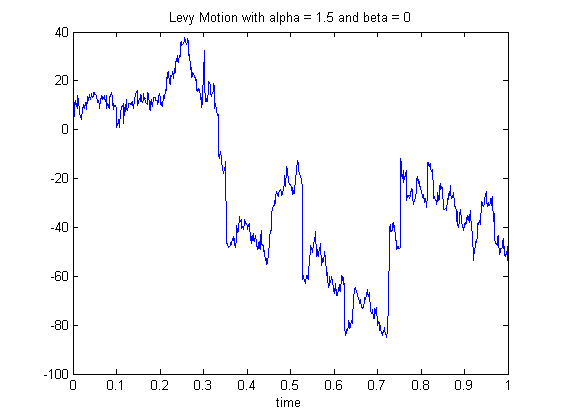
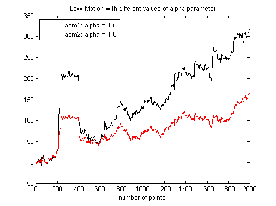
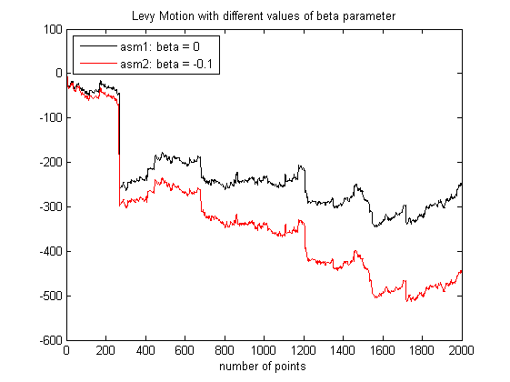

| FRACLAB Functions |
|
Generates an Alpha-Stable Levy Motion
ASM = asmlevy(N,ALPHA,BETA)
ASM = asmlevy(...,SEED)
ASM = asmlevy(N,ALPHA,BETA) Generates the alpha-stable Levy motion, ASM, using a sample size, N, a stability parameter, ALPHA, and a skewness parameter, BETA. N is a positive integer, ALPHA is a real in (0,2) and BETA is a real in [-1,1]. The symetric distribution corresponds to BETA = 0.
ASM = asmlevy(...,SEED) Generates the alpha-stable Levy motion, ASM, with a specific random seed, SEED. This is useful to generate the same path several times or to compare the paths of different ASMs.
N = 1000; A = 1.5; B = 0; t = linspace(0,1,N);
asm = asmlevy(N,A,B);
figure; plot(t,asm);
title('Levy Motion with alpha = 1.5 and beta = 0'); xlabel('time')

N = 2000; A1 = 1.5; A2 = 1.8; B = 0;
asm1 = asmlevy(N,A1,B,1000);
asm2 = asmlevy(N,A2,B,1000);
figure; plot(asm1,'k'); hold on; plot(asm2,'r');
legend('asm1: alpha = 1.5','asm2: alpha = 1.8','Location','NorthWest');
title('Levy Motion with different values of alpha parameter');
xlabel('number of points');xlim([0 N])

N = 2000; A = 1.5; B1 = 0; B2 = -0.1;
asm1 = asmlevy(N,A,B1,10);
asm2 = asmlevy(N,A,B2,10);
figure; plot(asm1,'k'); hold on; plot(asm2,'r');
legend('asm1: beta = 0','asm2: beta = -0.1','Location','NorthWest');
title('Levy Motion with different values of beta parameter');
xlabel('number of points');xlim([0 N])

asmlinfrac, asmornhulen, msmlevy
[1] P. Bratley, B.L. Fox, and L.E. Schrage "A guide to simulation",Springer-Verlag (1983).
[2] J.M. Chambers, C.L. Mallows, B.W. Stuck "A method for simulating stable random variables", JASA,VOL.71, NO. 354, PP.340-344 (1976, correction in 1986).
| |
alphaimage | CGMY_principal | |